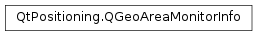

QGeoAreaMonitorInfo¶
Synopsis¶
Functions¶
- def
__eq__(other) - def
__ne__(other) - def
area() - def
expiration() - def
identifier() - def
isPersistent() - def
isValid() - def
name() - def
notificationParameters() - def
setArea(newShape) - def
setExpiration(expiry) - def
setName(name) - def
setNotificationParameters(parameters) - def
setPersistent(isPersistent)
Detailed Description¶
The
PySide2.QtPositioning.QGeoAreaMonitorInfoclass describes the parameters of an area or region to be monitored for proximity.The purpose of area monitoring is to inform a user when he/she comes close to an area of interest. In general such an area is described by a
PySide2.QtPositioning.QGeoCircle. The circle’s center represents the place of interest and the area around it identifies the geographical region within which notifications are sent.A
PySide2.QtPositioning.QGeoAreaMonitorInfoobject is valid if it has a non-empty name and a validPySide2.QtPositioning.QGeoAreaMonitorInfo.area(). Such objects must be registered with aPySide2.QtPositioning.QGeoAreaMonitorSourceto start and stop the monitoring process. Note that extensive monitoring can be very resource consuming because the positioning engine must remain active and has to match the current position with eachPySide2.QtPositioning.QGeoAreaMonitorInfoinstance.To further reduce the burden on the system there are optional attributes which can set. Each monitored area can have an expiry date which automatically removes the to-be-monitored area from the monitoring source once the expiry date has been reached. Another option is to adjust the persistence of a monitored area. A
PySide2.QtPositioning.QGeoAreaMonitorInfothatPySide2.QtPositioning.QGeoAreaMonitorInfo.isPersistent()will remain active beyond the current applications lifetime. If an area is entered while the monitoring application is not running the application will be started. Note that this feature is not available on all platforms. Its availability can be checked viaQGeoAreaMonitorSource.supportedAreaMonitorFeatures().
-
class
PySide2.QtPositioning.QGeoAreaMonitorInfo(other)¶ -
class
PySide2.QtPositioning.QGeoAreaMonitorInfo([name=""]) Parameters: - other –
PySide2.QtPositioning.QGeoAreaMonitorInfo - name – unicode
Constructs a
PySide2.QtPositioning.QGeoAreaMonitorInfoobject as a copy ofother.Constructs a
PySide2.QtPositioning.QGeoAreaMonitorInfoobject with the specifiedname.- other –
-
PySide2.QtPositioning.QGeoAreaMonitorInfo.area()¶ Return type: PySide2.QtPositioning.QGeoShapeReturns the boundaries of the to-be-monitored area. This area must not be empty.
-
PySide2.QtPositioning.QGeoAreaMonitorInfo.expiration()¶ Return type: PySide2.QtCore.QDateTimeReturns the expiry date.
After an active
PySide2.QtPositioning.QGeoAreaMonitorInfohas expired the region is no longer monitored and thePySide2.QtPositioning.QGeoAreaMonitorInfoobject is removed from the list ofactive monitors.If the expiry
PySide2.QtCore.QDateTimeis invalid thePySide2.QtPositioning.QGeoAreaMonitorInfoobject is treated as not having an expiry date. This implies an indefinite monitoring period if the object is persistent or until the current application closes if the object is non-persistent.
-
PySide2.QtPositioning.QGeoAreaMonitorInfo.identifier()¶ Return type: unicode Returns the identifier of the
PySide2.QtPositioning.QGeoAreaMonitorInfoobject. The identifier is automatically generated upon construction of a newPySide2.QtPositioning.QGeoAreaMonitorInfoobject.
-
PySide2.QtPositioning.QGeoAreaMonitorInfo.isPersistent()¶ Return type: PySide2.QtCore.boolReturns true if the
PySide2.QtPositioning.QGeoAreaMonitorInfois persistent. The default value for this property is false.A non-persistent
PySide2.QtPositioning.QGeoAreaMonitorInfowill be removed by the system once the application owning the monitor object stops. Persistent objects remain active and can be retrieved once the application restarts.If the system triggers an event associated to a persistent
PySide2.QtPositioning.QGeoAreaMonitorInfothe relevant application will be re-started and the appropriate signal emitted.
-
PySide2.QtPositioning.QGeoAreaMonitorInfo.isValid()¶ Return type: PySide2.QtCore.boolReturns true, if the monitor is valid. A valid
PySide2.QtPositioning.QGeoAreaMonitorInfohas a non-emptyPySide2.QtPositioning.QGeoAreaMonitorInfo.name()and the monitored area is notempty(). Otherwise this function returns false.
-
PySide2.QtPositioning.QGeoAreaMonitorInfo.name()¶ Return type: unicode Returns the name of the
PySide2.QtPositioning.QGeoAreaMonitorInfoobject. The name should be used to for user-visibility purposes.
-
PySide2.QtPositioning.QGeoAreaMonitorInfo.notificationParameters()¶ Return type: PySide2.QtCore.QVariantMapReturns the set of platform specific paraemters used by this
PySide2.QtPositioning.QGeoAreaMonitorInfo.
-
PySide2.QtPositioning.QGeoAreaMonitorInfo.__ne__(other)¶ Parameters: other – PySide2.QtPositioning.QGeoAreaMonitorInfoReturn type: PySide2.QtCore.boolReturns true if any of this object’s values are not the same as those of
other.
-
PySide2.QtPositioning.QGeoAreaMonitorInfo.__eq__(other)¶ Parameters: other – PySide2.QtPositioning.QGeoAreaMonitorInfoReturn type: PySide2.QtCore.boolReturns true if all of this object’s values are the same as those of
other.
-
PySide2.QtPositioning.QGeoAreaMonitorInfo.setArea(newShape)¶ Parameters: newShape – PySide2.QtPositioning.QGeoShapeSets the to-be-monitored area to
newShape.
-
PySide2.QtPositioning.QGeoAreaMonitorInfo.setExpiration(expiry)¶ Parameters: expiry – PySide2.QtCore.QDateTimeSets the expiry date and time to
expiry.
-
PySide2.QtPositioning.QGeoAreaMonitorInfo.setName(name)¶ Parameters: name – unicode Sets the user visibile
name.
-
PySide2.QtPositioning.QGeoAreaMonitorInfo.setNotificationParameters(parameters)¶ Parameters: parameters – PySide2.QtCore.QVariantMapSets the set of platform specific
parametersused byPySide2.QtPositioning.QGeoAreaMonitorInfo.
-
PySide2.QtPositioning.QGeoAreaMonitorInfo.setPersistent(isPersistent)¶ Parameters: isPersistent – PySide2.QtCore.boolSets the
PySide2.QtPositioning.QGeoAreaMonitorInfoobjects persistence toisPersistent.Note that setting this flag does not imply that QGeoAreaMonitorInfoSource supports persistent monitoring.
QGeoAreaMonitorSource.supportedAreaMonitorFeatures()can be used to check for this feature’s availability.
© 2018 The Qt Company Ltd. Documentation contributions included herein are the copyrights of their respective owners. The documentation provided herein is licensed under the terms of the GNU Free Documentation License version 1.3 as published by the Free Software Foundation. Qt and respective logos are trademarks of The Qt Company Ltd. in Finland and/or other countries worldwide. All other trademarks are property of their respective owners.